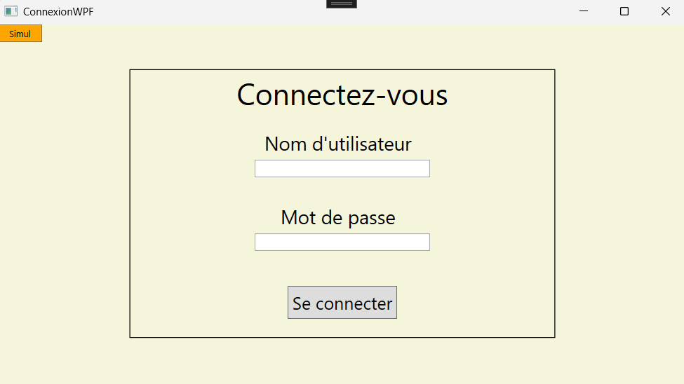

Gestion d'accès (WPF)
Description
Application WPF en C# permettant de gérer les accès aux bâtiments de l’entreprise GSP
Technologies utilisées
C#, .NET, WPF, SQL Server
Page de connection
Tout en haut à gauche sur la page de connection se situe un bouton nous permettant d’accéder au simulateur :

Page d'accueil
En survolant chaque bâtiment vous pouvez voir les informations de ce dernie :
Lorsque l’on clique sur un des bâtiments, on obtient la liste des personnes habilités à accéder à ce bâtiment :
Cliquez sur le bouton «Ajouter» qui se trouve sur la page d'accueil pour accéder à un formulaire d’ajout d’une personne dans la base de données :
Cliquez sur le bouton «Modification bât» qui se trouve sur la page d'accueil pour accéder à un formulaire de modification des bâtiments dans la base de données :
Cliquez sur le bouton «Modification Pers» qui se trouve sur la page d'accueil pour accéder à un formulaire de modification des personnes dans la base de données :